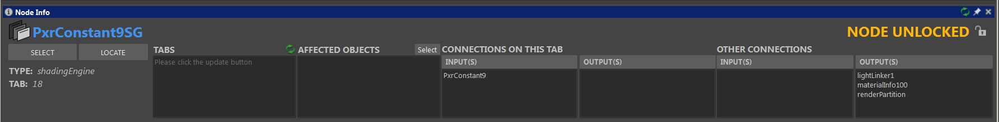

Node Editor Info Panel NOTE: Maya's Node Editor isn't very straight forward when it comes to tabs. Unfortunately at this point tabs are listed as numbers and when looking for nodes in tabs the script needs to switch between the tabs visually in order to get current list of nodes on each of them. |
|
VERSION 1.2.1 |
•Fixed gui size/alignment issues |
VERSION 1.2 |
•Tabs now show tab names (or numbers in case the file wasn't saved; it's a Maya issue) |
VERSION 1.1 |
•Fixed node selection/focus issues •Replaced/added a Select and Locate buttons to the "Affected Objects" column |
VERSION 1.0 |
•Adds a panel to the Node Editor showing information about the selected node.  •Selected node can be searched to find other tabs in exist in, double click on the tab number will switch to the node in that tab. •When no nodes are selected, allows you to search for a node; can be entered manually or right-click to see relevant nodes listed according to current object selection. Useful if you want to locate a selected object material tree. •Easy rename by clicking left to the node name. •Easy to lock or unlock node with indication. |
Ethan's RFM Enhancement Pack is a property of Ethan Phoenix.
All Rights Reserved © Ethan Phoenix. For personal use only. Commercial use is prohibited. Not for redistribution without permission.